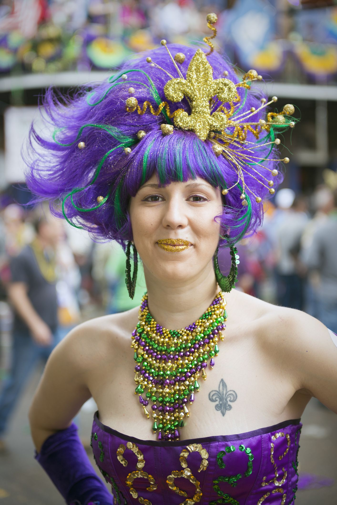

When it all began
The origins of Mardi Gras can be traced to medieval Europe, passing through Rome and Venice in the 17th and 18th centuries to the French House of the Bourbons. From here, the traditional revelry of "Boeuf Gras," or fatted calf, followed France to her colonies. On March 2, 1699, French-Canadian explorer Jean Baptiste Le Moyne Sieur de Bienville arrived at a plot of ground 60 miles directly south of New Orleans, and named it "Pointe du Mardi Gras" when his men realized it was the eve of the festive holiday. Bienville also established "Fort Louis de la Louisiane" (which is now Mobile) in 1702. In 1703, the tiny settlement of Fort Louis de la Mobile celebrated America's very first Mardi Gras.
Our traditions
Mardi Gras is about music, parades, picnics, floats and excitement. It's one big holiday in New Orleans! Revelers know to wear costumes or at least dress in purple, green, and gold, and adorn themselves with long beads caught from the floats of previous parades. You'll see a lot of crazy costumes, kids with their families are everywhere, and both locals and visitors having a great time. Parade goers will sit on the ground, throw balls, play music, eat great food and watch the crowds walk by between parades. On Mardi Gras day, the majority of non-essential businesses are shut down because of the celebration. Experienced revelers know to bring a large bag with them so they can haul away all the beads and trinkets they will catch from the parades!

As Mayor of the great City of New Orleans, I invite you to visit our city to experience the excitement
of Mardi Gras!
Mayor of New Orleans
The Carnival season officially begins each year on Jan. 6 -- the Feast of the Epiphany, also called
Twelfth Night or
Kings’ Day. Traditional balls are held in the weeks leading up to the big event.
Spectacular parades with colorful, creative floats start rolling before Mardi Gras Day. Our private
Carnival clubs,
called krewes, take on royalty status and throw beads, doubloons and toys to parade goers. Visitors
quickly learn to
say, "Throw me something mister!"
The culmination of Mardi Gras in New Orleans begins early on Mardi Gras Day when the Zulu Social Aid &
Pleasure Club and
the Rex Organization parade through the city. Music, food and elaborate costumes add to the fun-filled
day of excitement
for revelers of all ages.
New Orleans, with its unmatched culture and world-famous music and cuisine, is an exciting place to be
at any time of
the year. We invite everyone to experience Mardi Gras at least once in their lifetime. Make your plans
now to be a part
of this great tradition and see firsthand why we say, "Laissez les bon temps rouler!"
Sincerely,
LaToya Cantrell
Mayor of New Orleans